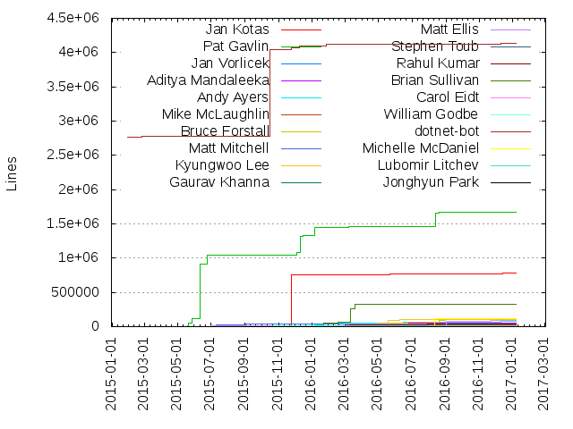
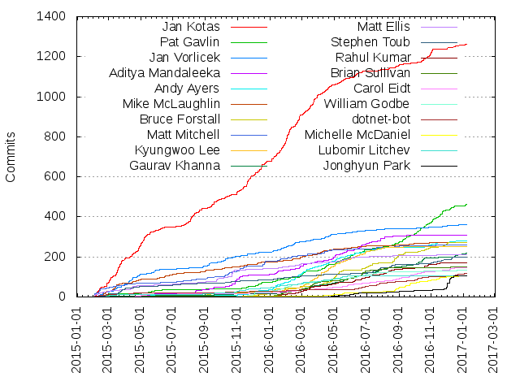

Authors
| Author | Commits (%) | + lines | - lines | First commit | Last commit | Age | Active days | # by commits |
|---|
| Jan Kotas | 1263 (13.66%) | 776789 | 245494 | 2015-01-31 | 2017-01-05 | 704 days, 12:07:52 | 391 | 1 |
| Pat Gavlin | 464 (5.02%) | 1675305 | 290369 | 2015-02-05 | 2017-01-07 | 701 days, 23:07:26 | 196 | 2 |
| Jan Vorlicek | 362 (3.92%) | 19996 | 31027 | 2015-01-31 | 2017-01-05 | 704 days, 16:10:30 | 203 | 3 |
| Aditya Mandaleeka | 309 (3.34%) | 53654 | 17298 | 2015-04-22 | 2017-01-07 | 625 days, 12:38:56 | 156 | 4 |
| Andy Ayers | 280 (3.03%) | 72314 | 17205 | 2015-04-28 | 2017-01-04 | 616 days, 22:03:03 | 150 | 5 |
| Mike McLaughlin | 273 (2.95%) | 23178 | 15488 | 2015-02-14 | 2016-12-19 | 674 days, 0:13:21 | 161 | 6 |
| Bruce Forstall | 272 (2.94%) | 101450 | 56367 | 2015-05-14 | 2016-12-14 | 580 days, 1:18:50 | 120 | 7 |
| Matt Mitchell | 258 (2.79%) | 34629 | 16566 | 2015-02-03 | 2016-11-10 | 646 days, 1:16:15 | 116 | 8 |
| Kyungwoo Lee | 252 (2.73%) | 104469 | 87999 | 2015-02-24 | 2016-09-14 | 568 days, 18:13:43 | 122 | 9 |
| Gaurav Khanna | 219 (2.37%) | 8846 | 4909 | 2015-01-31 | 2017-01-06 | 705 days, 20:25:13 | 135 | 10 |
| Matt Ellis | 209 (2.26%) | 39198 | 22563 | 2015-01-31 | 2016-11-12 | 650 days, 22:28:10 | 118 | 11 |
| Stephen Toub | 198 (2.14%) | 5595 | 3987 | 2015-02-11 | 2017-01-04 | 693 days, 17:18:38 | 130 | 12 |
| Rahul Kumar | 172 (1.86%) | 34085 | 2973 | 2015-02-09 | 2017-01-07 | 697 days, 18:00:42 | 103 | 13 |
| Brian Sullivan | 152 (1.64%) | 332138 | 98439 | 2015-03-26 | 2016-12-13 | 627 days, 19:16:14 | 85 | 14 |
| Carol Eidt | 147 (1.59%) | 86644 | 78361 | 2015-03-25 | 2016-12-23 | 638 days, 17:42:17 | 107 | 15 |
| William Godbe | 132 (1.43%) | 5958 | 19460 | 2015-09-23 | 2016-12-20 | 453 days, 22:32:56 | 82 | 16 |
| dotnet-bot | 119 (1.29%) | 4131394 | 44088 | 2015-01-31 | 2017-01-05 | 705 days, 17:30:54 | 93 | 17 |
| Michelle McDaniel | 107 (1.16%) | 123850 | 102288 | 2015-10-15 | 2017-01-05 | 447 days, 22:40:58 | 69 | 18 |
| Lubomir Litchev | 105 (1.14%) | 15713 | 3927 | 2015-02-03 | 2016-05-27 | 478 days, 12:55:50 | 79 | 19 |
| Jonghyun Park | 105 (1.14%) | 3284 | 515 | 2016-04-21 | 2016-12-20 | 243 days, 4:42:01 | 43 | 20 |
These didn't make it to the top: Russ Keldorph, Koundinya Veluri, James Ko, Sean Gillespie, Rama krishnan Raghupathy, Kamil Rytarowski, John Chen, Sergiy Kuryata, Geoff Norton, Joseph Tremoulet, Sejong Oh, Rama Krishnan Raghupathy, Mike Danes, Rich Lander, Jarret Shook, stephentoub, Sivarv, wtgodbe, Justin Van Patten, sivarv, Alex Ghiondea, Davis Goodin, Richard Lander, Eugene Zemtsov, Vance Morrison, Eugene Rozenfeld, Tarek Mahmoud Sayed, Brian Robbins, Eric Erhardt, Swaroop Sridhar, Bengu Li, SaeHie Park, Lakshmi Priya Sekar, Ben Pye, Jose Perez Rodriguez, Jeremy Kuhne, Geunsik Lim, Eric Mellino, Evgeny Pavlov, Ben Adams, Yi Zhang (CLR), MyungJoo Ham, Fadi Hanna, Hyeongseok Oh, David Mason, tijoytom, Wes Haggard, Hongtao Yu, AlexGhiondea, Dmitry-Me, Sergey Andreenko, Chris McKinsey, Steve Harter, Jostein Kjønigsen, Richard L Ford, Maoni Stephens, John Chen (CLR), jashook, Smile Wei, Lakshmi Priya, Peter Jas, Manu, Dan Moseley, Michal Strehovský, smile21prc, Alexander Köplinger, Prajwal A N, Hanjoung Lee, Sung-Jae Lee, Petr Onderka, Maoni0, Ian Hays, Hyung-Kyu Choi, sandreenko, Tijoy Tom Kalathiparambil, Stephen A. Imhoff, Nick Guerrera, Bruce Bowyer-Smyth, Peter Kukol, Joel Hendrix, Drew Scoggins, Hugh Bellamy, dotnet bot, Sridhar Periyasamy, Sasha Semennikov, Pallavi Taneja, Nate Amundson, Kshama Pawar, Gaurav Khanna (CLR), Bryan P. Arant, jashoo, Kasper F. Brandt, John Bottenberg, Faizur Rahman, Eric Eilebrecht, Alexander Radchenko, noahfalk, chunseoklee, Xy Ziemba, Senthil, Sejong OH, Sedar Gokbulut, Jan Henke, Venkata Sivaramakrishna Ramadugu, Tarekm Mahmoud Sayed, Peter Marcu, Mert, Dmitri-Botcharnikov, Dick van den Brink, Deepak Shankargouda, Bryan Arant, Yi Zhang, Tanner Gooding, Sujin Kim, Mukul Sabharwal, Jonathan Miller, Jeroen Janssen, Igor Kulaychuk, Eugene, Eric St. John, Egor Chesakov, tijoytk, Zlatko Knezevic, Sven Boemer, Russell C Hadley, Rama, Matthew Whilden, Maks Naumov, Lee Culver, LaSombra, Juergen Hoetzel, John Chen (JOCHEN7), Jim Ma, DDCloud, Andrey Kvochko, Andrey Akinshin, Alex Perovich, Adam Sitnik, kvochko, kchoi, Zhicheng Zhu, Viacheslav Nikolaev, Tony Narlock, Steven Das, Ryan Byington, Prem Ramanathan, Natalia Glagoleva, Matthew Parkinson, Matt Warren, Jostein Kjonigsen, Jon Hanna, Jiyoung Giuliana Yun, Jeremy Barton, Ivan Baravy, Hannah Zhang, Eric StJohn, Chuck Mitchell, Ben Boeckel, rhadley, bartonjs, Sepideh Khoshnood, Mikhail Pilin, Lee Coward, Kevin Jones, Jonathan Taylor, Hadi Brais, Gregg Miskelly, Gerald Scott Freeman, Ganesh Ranganathan, Dongyun Jin, David Mitchell, Cagri Aslan, Cagri, Ben Monroe, Austin Wise, Atsushi Kanamori, Anders Jensen-Waud, Alexandru Ghiondea, vinnyrom, varocarbas, taylorjonl, shion, shahid-pk, sergey-raevskiy, schellap, papaslavik, mskvortsov, mkborg, mikem8361, mikedn, gitchomik, dasMulli, danmosemsft, chcosta, alexghiondea, ahsonkhan, Yufei Huang, Xiangyang (Mark) Guo, Ravi Eda, Phil Christensen, Mort Yao, Mikhail I. Krivtsov, Marqin, Mariana Rios Flores, Marcin Badurowicz, Lucas Meijer, Knagis, Jürgen Hötzel, Julien Couvreur, JohnChen0, Jeff Foster, Immo Landwerth, George Sapkin, Emmanuel, Daniel Podder, Christopher Costa, Chase Miller, Brad Robinson, Bart J.F. De Smet, Andrew Schwartzmeyer, Alfredo Menendez Sancho, Alexandr Nikitin, Aaron Havens, あまみや ゆうこ, Łukasz Domeradzki, zhangkaizhao, vkvenkat, vkairys, sepidehMS, sbomer, pius.lee, paulnice, njy, mogemimi, mjsabby, mike, maoni0, krk, kingces95, jorive, joemmett, ikopylov, hqueue, giuliohome, geoffkizer, dobe, darxis, chuckm911, christos-P, chrisaut, adiaaida, Vijay Ramakrishnan, Viacheslav Ivanov, Valery, Val Menn, Tom Van Looy, Thomas Klausner, Tarek mahmoud Sayed, Steve Desmond, Stephen Cleary, Spencer Stephens, Shahid Khan, Sergei Vorobev, Scott Harwell, Santiago Fernandez Madero, Russell C. Hadley, Rumesh Eranga, Rony Batista, Ron Cain, Roman Shchekin, Roman Pavlov, Robert Matusewicz, Robert, RimashMohomed, Rajkumar Janakiraman, Peter Foley, Pavel Pochobut, Patrick Lambert, Pascal Borreli, Oleg Demchenko, Oguz Bastemur, Noah Falk, Nicolas Deslandes, Nico Weber, Mirth Hickford, Mili (Yi) Zhang, Mikhail Skvortcov, Matt Johnson, Matt Burke, Matt, Marvin, Martin Woodward, Martijn Hoekstra, Mark Hurd, Marek Linka, Marcel Gosselin, Maira Wenzel, Luqun Lou, Lukasz Tomczyk, Ludovic Henry, Luca, Lorenzo Tessiore, Llewellyn Pritchard, Lioncash, Li Tian, Kurt Aadnoy, KrzysztofCwalina, Krzysztof Cwalina, Kevin Mullins, Karel Zikmund, Jérémie Galarneau, Justin Cormack, Jude Melancon, José Rivero, Jostein Kjønigsen, Josh Varty, Josh Free, Jose Manuel Heredia Hidalgo, Jonathon Rossi, John Soklaski, Jiyoung Yun, Jeroen Frijters, Jason Zhekov, Jason Young, Jared Parsons, James Singleton, Jack Pappas, Henry Baba-Weiss, Guo Xiao, Greg G, Geoffrey Huntley, Geoff Kizer, Gary Coulbourne, Felipe Pessoto, Evgeny Mandrikov, Evgeniy Devyatkin, Eddie Hedges, Drew DeVault, Dmitri Botcharnikov, DionYe, Derek Beattie, David Wrighton, David Kean, Daniel Qiu, Daniel Harvey, Daniel Cazzulino, Chuck Ries, Christopher Currens, Christian Jacobsen, Chris, Cheryl Simmons, Caio Kinelski, Cagri (Charlie) Aslan, Brandon Bloom, Benjamin Hodgson, Ben Gribaudo, Barry Dorrans, Aurojit Panda, Arkady Shapkin, Andrew Stanton-Nurse, Andrew Karpov, Andrew Au, Andreas Strid, Anders Wenhaug, Alexandre Mutel, Alexander Vostres, Alexander Speshilov, Aditya Mahajan, Adam Tornhill, Adam Speight, Aaron Bieber
Only top 20 authors shown
Only top 20 authors shown
| Month | Author | Commits (%) | Next top 5 | Number of authors |
|---|
| 2017-01 | Pat Gavlin | 11 (15.28% of 72) | James Ko, Gaurav Khanna, dotnet-bot, Justin Van Patten, SaeHie Park | 31 |
| 2016-12 | Jonghyun Park | 58 (18.83% of 308) | Jan Kotas, Pat Gavlin, Gaurav Khanna, Justin Van Patten, dotnet-bot | 61 |
| 2016-11 | Pat Gavlin | 64 (15.09% of 424) | SaeHie Park, Jan Kotas, Bruce Forstall, Stephen Toub, Michelle McDaniel | 81 |
| 2016-10 | Pat Gavlin | 57 (11.22% of 508) | Jan Kotas, Gaurav Khanna, Bruce Forstall, Rahul Kumar, dotnet-bot | 88 |
| 2016-09 | Pat Gavlin | 44 (11.80% of 373) | Michelle McDaniel, Carol Eidt, Bruce Forstall, Joseph Tremoulet, Jan Kotas | 70 |
| 2016-08 | Bruce Forstall | 38 (8.19% of 464) | Rahul Kumar, Pat Gavlin, Jan Kotas, Michelle McDaniel, Smile Wei | 83 |
| 2016-07 | Stephen Toub | 32 (7.44% of 430) | James Ko, Aditya Mandaleeka, Bruce Forstall, dotnet-bot, Rahul Kumar | 86 |
| 2016-06 | Kyungwoo Lee | 39 (6.44% of 606) | Jan Kotas, Pat Gavlin, Brian Sullivan, Aditya Mandaleeka, Gaurav Khanna | 85 |
| 2016-05 | Russ Keldorph | 39 (6.08% of 641) | Bruce Forstall, Jan Kotas, Aditya Mandaleeka, Pat Gavlin, Kyungwoo Lee | 93 |
| 2016-04 | Kyungwoo Lee | 60 (9.38% of 640) | Jan Kotas, Bruce Forstall, Pat Gavlin, Andy Ayers, Sean Gillespie | 84 |
| 2016-03 | Jan Kotas | 98 (15.08% of 650) | Kyungwoo Lee, Andy Ayers, Brian Sullivan, Rahul Kumar, Pat Gavlin | 71 |
| 2016-02 | Jan Kotas | 130 (22.73% of 572) | Kamil Rytarowski, Andy Ayers, Jan Vorlicek, Aditya Mandaleeka, Sejong Oh | 68 |
| 2016-01 | Jan Kotas | 102 (19.54% of 522) | Andy Ayers, Jan Vorlicek, William Godbe, Kamil Rytarowski, Aditya Mandaleeka | 68 |
| 2015-12 | Jan Kotas | 73 (25.00% of 292) | Matt Mitchell, Andy Ayers, Pat Gavlin, William Godbe, Mike McLaughlin | 51 |
| 2015-11 | Jan Kotas | 79 (25.57% of 309) | Matt Mitchell, Aditya Mandaleeka, Jan Vorlicek, Pat Gavlin, Mike McLaughlin | 58 |
| 2015-10 | Jan Kotas | 40 (11.27% of 355) | Matt Ellis, Aditya Mandaleeka, Matt Mitchell, Jan Vorlicek, Koundinya Veluri | 56 |
| 2015-09 | Jan Kotas | 43 (19.11% of 225) | Jan Vorlicek, Matt Ellis, Aditya Mandaleeka, Koundinya Veluri, Mike McLaughlin | 50 |
| 2015-08 | Jan Kotas | 68 (33.83% of 201) | Aditya Mandaleeka, Eric Erhardt, Ben Pye, Jan Vorlicek, Mike McLaughlin | 45 |
| 2015-07 | Jan Kotas | 25 (18.52% of 135) | Matt Ellis, Matt Mitchell, Mike McLaughlin, Ben Pye, Stephen Toub | 39 |
| 2015-06 | Mike McLaughlin | 21 (19.09% of 110) | Jan Kotas, Jan Vorlicek, Bengu Li, Pat Gavlin, stephentoub | 33 |
| 2015-05 | Jan Kotas | 77 (38.12% of 202) | Jan Vorlicek, Pat Gavlin, Aditya Mandaleeka, Bengu Li, Carol Eidt | 45 |
| 2015-04 | Jan Kotas | 68 (19.88% of 342) | Jan Vorlicek, Rich Lander, Bengu Li, Mike McLaughlin, Matt Ellis | 53 |
| 2015-03 | Jan Kotas | 116 (29.97% of 387) | Mike McLaughlin, Jan Vorlicek, Stephen Toub, Eugene Zemtsov, Matt Ellis | 44 |
| 2015-02 | Jan Kotas | 70 (15.05% of 465) | Matt Mitchell, Geoff Norton, Mike McLaughlin, Matt Ellis, Jan Vorlicek | 62 |
| 2015-01 | dotnet-bot | 2 (18.18% of 11) | Matt Ellis, Maoni Stephens, Rama krishnan Raghupathy, Jan Vorlicek, Jan Kotas | 8 |
| Year | Author | Commits (%) | Next top 5 | Number of authors |
|---|
| 2017 | Pat Gavlin | 11 (15.28% of 72) | James Ko, Gaurav Khanna, dotnet-bot, Justin Van Patten, SaeHie Park | 31 |
| 2016 | Jan Kotas | 582 (9.48% of 6138) | Pat Gavlin, Bruce Forstall, Andy Ayers, Kyungwoo Lee, Gaurav Khanna | 262 |
| 2015 | Jan Kotas | 678 (22.35% of 3034) | Jan Vorlicek, Matt Mitchell, Mike McLaughlin, Matt Ellis, Aditya Mandaleeka | 221 |
| Domains | Total (%) |
|---|
| microsoft.com | 6983 (75.54%) |
|---|
| gmail.com | 925 (10.01%) |
|---|
| users.noreply.github.com | 516 (5.58%) |
|---|
| samsung.com | 141 (1.53%) |
|---|
| hotmail.com | 77 (0.83%) |
|---|
| gmx.com | 75 (0.81%) |
|---|
| comcast.net | 56 (0.61%) |
|---|
| justinvp.com | 54 (0.58%) |
|---|
| outlook.com | 50 (0.54%) |
|---|
| curlybracket.co.uk | 33 (0.36%) |
|---|